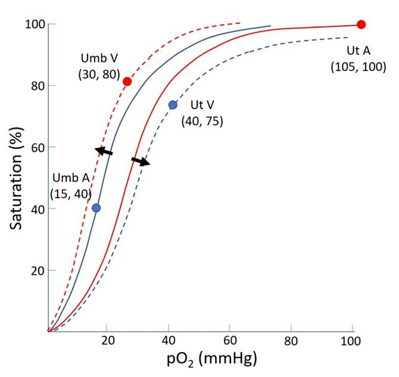
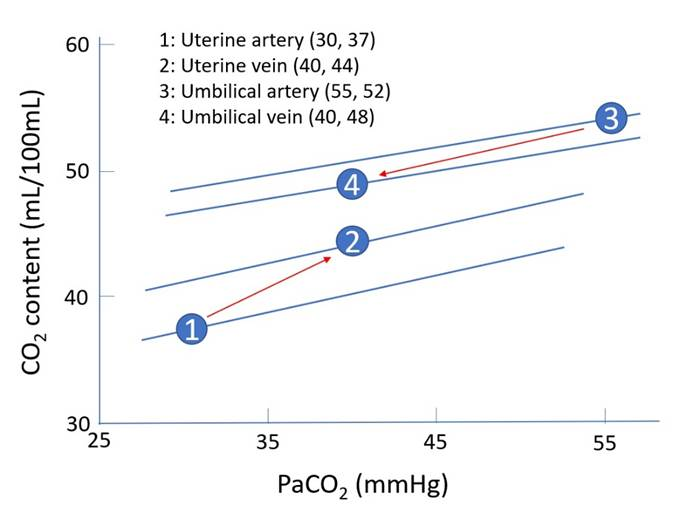

• Intro
• Maternal adaptations
• Foetal adaptations
• Haemoglobin adaptations: Bohr & Haldane effects
|
Mechanism of transfer |
· Diffusion down partial pressure gradient |
|
Problem |
· Area 15m2 (cf. lung 80m2) · Thickness 3.5μm (cf. lung 0.5μm) · Hence slow rate of transfer cf. lung |
|
Solution |
· Maternal adaptations: ↑CO, ↑MV · Foetal adaptations: ↑Hb affinity for O2, ↑Hb concentration · Haemoglobin design: Bohr and Haldane effects |
|
↑Cardiac output |
· ↑50% at term, with 600mL/min to placenta · Cause: a) ↑metabolic demand -> ↑preload b) progesterone-induced ↓SVR · Effect: ↑DO2 to placenta, ↑O2 uptake, ↑CO2 excretion |
|
↑Alveolar ventilation |
· ↑50% at term (≈ ↑RR 10% + ↑TV 35%) · Cause: a) ↑metabolic demand b) progesterone sensitises central chemoreceptors · Effect on CO2: ↓PaCO2 -> enhanced double Bohr effect · Effect on O2: ↑PaO2 -> ↑concentration gradient and ↑DO2 |
|
HbF |
· Left shift OHDC with p50 19mmHg (cf.26mmHg) · Cause: serine substitution -> ↓affinity for 2,3-DPG · Effect: umbilical venous SvO2 80% despite pO2 30mmHg |
|
Polycythaemia |
· Hb 180g/L cf. 140g/L · Cause: hypoxia -> ↑erythropoiesis · Effect: umbilical venous CvO2 16mL/100mL despite SvO2 80% |
|
Description |
· If ↓pH, ↑pCO2: o ↓Affinity of Hb for O2 o Right shift oxyhaemoglobin dissociation curve (OHDC) |
|
Mechanism |
· Allosteric interactions between haems: o ↓pH, ↑pCO2 -> tense (T) state -> ↓affinity for O2 o ↑pH, ↓pCO2 -> relaxed (R) state -> ↑affinity for O2 |
|
Double Bohr effect |
· As HbF unloads CO2: o ↑pCO2/H+ in maternal lacuna -> ↓HbA affinity for O2 -> unload O2 o b)↓pCO2/H+ in foetal capillary -> ↑HbF affinity for O2 -> load O2 
|
|
Description |
· HHb has higher affinity for CO2 than HbO2 |
|
Mechanism |
· 70%: because HHb is 3.5x better at forming carbaminoHb · 30%: because ↑pKa of imidazoles to 8.2 enhances buffering of H+ |
|
Double Haldane effect |
· As HbA unloads O2: · a)↑pO2 in capillary -> ↓HbF affinity for CO2 -> unload CO2 · b)↓pO2 in lacuna -> ↑HbA affinity for CO2 -> load CO2 · >Amplification of Bohr effect -> ↑foetal PaO2 
|
Feedback welcome at ketaminenightmares@gmail.com